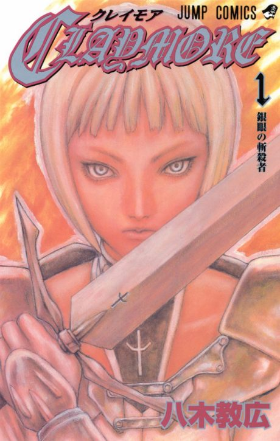

Manga continues fromCh. 57
Anime
Manga continues fromCh. 57
Anime
MangaClaymore
CLAYMORE
AniList7.4
Animeter—
Episodes26 ep
MangaCh. 57
Anime finished. Where does the manga pick up?
Start at Chapter57
The anime follows the manga to around chapter 56, then drifts and ends with an original ending from about episode 21-24. Start at chapter 57 (volume 10) to read the real ending. The manga is finished at 159 chapters.
156159 end
Season 1Start reading here